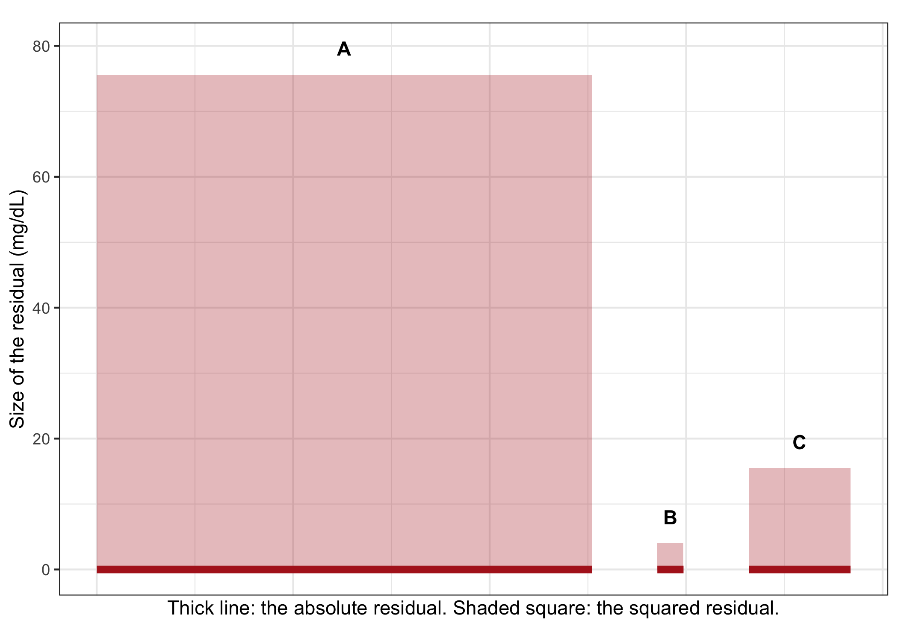
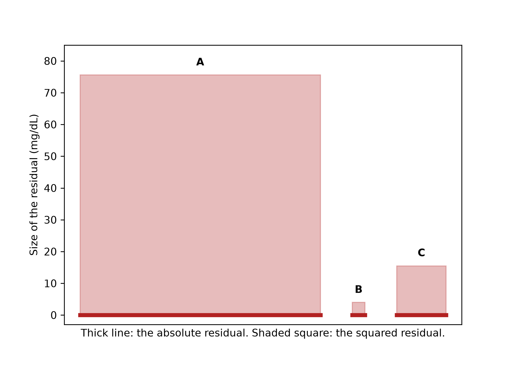

A loss function scores a candidate line against the data; the fitting procedure returns the line with the lowest score. Here you will aim to understand what a loss function is, starting from computing a residual, to a sum of squared residuals, a mean squared error and a mean absolute error from a set of predictions.
Theory: residuals; cancellation; SSR, MSE, RMSE and MAE; sensitivity to large errors.
NoteThe plots are for looking at
The code for every plot is folded away just above it, in case you are curious, and all of it is in the notebook linked at the top of each tab. You are not expected to write it yourself.
Download this exercise as an R Markdown notebook (.Rmd): the text and every code cell of the R version, including the code for the plots, with the blanks left for you to fill in. Open it in Positron or RStudio and run it a chunk at a time.
Packages and data
data/glucose_study.csv is the dataset for the rest of Day 3: age in years and one blood glucose measurement in mg/dL for 80 adults, taken from data/diabetes.csv, the file you met on Day 2.
# Packages for this exercise. If one is missing, remove the # and run this line once:# install.packages(c("tidyverse"))library(tidyverse)theme_set(theme_bw()) # white background for every plotoptions(pillar.sigfig =6) # print tables with more decimal placesglu <-read_csv("data/glucose_study.csv")head(glu)
The best fit line is the one that minimises the average distance, the error, between the predicted values and the actual data points. For a single data point this error is called the residual:
#> person age glucose
#> 1 A 28 194
#> 2 B 30 115
#> 3 C 55 111
Here they are with the line. The black points are the observed glucose values. The orange points are what the line predicts for a person of that age. The dashed red segment between the two is the residual.
residual, observed minus predicted: \(194 - 118.4 = 75.6\)
absolute residual, the residual without its sign: \(75.6\)
squared residual: \(75.6^2 = 5715.36\)
Person
Age
Observed glucose
Predicted glucose
Residual
Absolute residual
Squared residual
A
28
194
118.4
75.6
75.6
5715.36
B
30
115
C
55
111
Calculate the predictions and the residuals for B and C.
Interpret a positive and a negative residual. Look at the plot: where is the person, compared with the line?
Calculate the three losses for these three people:
MAE, the mean absolute error: the average of the absolute residuals;
MSE, the mean squared error: the average of the squared residuals;
RMSE, the root mean squared error: the square root of the MSE.
Verify your calculations in code. Each new column is one step of the table.
# Replace every ______ below, then run this cell.three <- three |>mutate(predicted =110+0.3* age,residual = ______ - ______,absolute =abs(residual),squared = residual^2)threethree |>summarise(MAE =mean(absolute),MSE =mean(squared),RMSE =sqrt(mean(squared)))
TipStuck?
A residual is the observed value minus the predicted value. Both are columns of three: one was there from the start, and the other is created on the line above the blanks.
What squaring does. This picture draws the same three residuals twice. The thick line under each square is the absolute residual: a length. The shaded square built on it is the squared residual: an area.
Code for this plot (optional)
# put the three squares side by side, with a gap of 10 between themsquares <- three |>mutate(left =c(0, 85.6, 99.6),right = left + absolute)ggplot(squares) +geom_rect(aes(xmin = left, xmax = right, ymin =0, ymax = absolute),fill ="firebrick", alpha =0.3) +geom_segment(aes(x = left, xend = right, y =0, yend =0),colour ="firebrick", linewidth =2) +geom_text(aes(x = (left + right) /2, y = absolute +4, label = person),fontface ="bold") +coord_fixed() +# one unit is the same length both wayslabs(x ="Thick line: the absolute residual. Shaded square: the squared residual.",y ="Size of the residual (mg/dL)") +theme(axis.text.x =element_blank(), axis.ticks.x =element_blank())

Person A’s residual is much longer than the other two. As a length, A is 80% of the total absolute error. As a square, A is 96% of the total squared error: the other two squares almost disappear. Squaring gives large errors far more weight than small ones. Keep this picture in mind: it comes back at the end of this exercise.
ImportantLearning points
A residual is observed minus predicted.
MAE and RMSE have units of mg/dL, the same as glucose.
MSE has units of \((\text{mg/dL})^2\), which is why it is such a large number.
Part 2 — From three people to all 80
Three people are not a dataset. Now do exactly the same steps for all 80, one step at a time. First the prediction and the residual, as two new columns:
Eighty errors, many of them 20 or 30 mg/dL, add up to about −6. The residuals above the line are positive and add up to +888. The ones below are negative and add up to −895. They cancel each other, so the plain sum says almost nothing about how well the line fits. There are two common ways to stop the cancellation:
Square each residual. This removes the sign and penalises large errors more.
Take the absolute value of each residual. This removes the sign too, but does not penalise large errors as heavily.
These are the same two columns you filled in by hand:
#> # A tibble: 1 × 4
#> SSR MSE RMSE MAE
#> <dbl> <dbl> <dbl> <dbl>
#> 1 67804.2 847.552 29.1127 22.2888
What it is
For this line
SSR
the sum of squared residuals
67,804
MSE
the SSR divided by the 80 people (the L2 loss)
847.6 \((\text{mg/dL})^2\)
RMSE
the square root of the MSE, back in mg/dL
29.1 mg/dL
MAE
the average size of an error (the L1 loss)
22.3 mg/dL
Question! The RMSE is 29.1 mg/dL and the MAE is 22.3 mg/dL, for the same line and the same people. Which one is the real error?
Both are. The MAE is the average size of an error. The RMSE is built from squares, so the people the line gets most wrong count for more, exactly as person A’s square did. The RMSE is larger than the MAE whenever the errors are not all the same size.
A loss lets us compare lines. Somebody draws a different line by hand:
Score it in the same way. Which of the two lines fits these 80 people better?
# Replace every ______ below, then run this cell.glu |>mutate(predicted_hand = ______,residual_hand = glucose - predicted_hand) |>summarise(SSR =sum(residual_hand^2),MSE =mean(residual_hand^2),RMSE =sqrt(mean(residual_hand^2)),MAE =mean(abs(residual_hand)))
TipStuck?
The prediction is the equation of the hand-drawn line, written with the age column, in the same way as 110 + 0.3 * age was written for the first line.
ImportantLearning points
Residuals have signs, so adding them up cancels the errors out. Square them or take their absolute value first.
SSR, MSE and RMSE are built from squared residuals. MAE is built from absolute residuals.
A loss is one number for one line, on one dataset. The line with the lower loss fits better.
The default loss: MSE
The functions that fit a linear regression, such as linear_reg(), choose the line with the lowest MSE, so this is not a decision you will normally have to take. The reason is practical: the squared loss is a smooth curve with no corners, which makes its lowest point easy to find. Exercise 3.4 finds it by following the slope downhill, and Exercise 3.5 finds it with a formula.
The price is sensitivity to outliers. Part 1 showed why: person A was 80% of the total absolute error but 96% of the total squared error. A few patients with very large errors, for example a mistyped glucose, can therefore pull an MSE-fitted line towards them, while under the MAE each counts only for its distance.
ImportantLearning points
The MSE is more sensitive to outliers than the MAE, because it squares the errors.
The MAE is easier to interpret: it is the average size of an error, in mg/dL.
Fitting functions use the squared error because it is easier to minimise. From here on, so do we.
A loss takes a line and returns a number. Every line you scored here was handed to you. Exercise 3.3 turns that round: keep the data fixed, let the two parameters vary, and look for the pair with the lowest MSE.
Download this exercise as a Jupyter notebook (.ipynb): the text and every code cell of the Python version, including the code for the plots, with the blanks left for you to fill in. Open it in Jupyter, VS Code or Positron and run it a cell at a time.
Packages and data
data/glucose_study.csv is the dataset for the rest of Day 3: age in years and one blood glucose measurement in mg/dL for 80 adults, taken from data/diabetes.csv, the file you met on Day 2.
# Packages for this exercise. If one is missing, install it once from a terminal# (in a Jupyter notebook, type %pip instead of pip):# pip install pandas numpy matplotlibimport pandas as pdimport numpy as npimport matplotlib.pyplot as pltfrom matplotlib.patches import Rectangleglu = pd.read_csv("data/glucose_study.csv")glu.head()
The best fit line is the one that minimises the average distance, the error, between the predicted values and the actual data points. For a single data point this error is called the residual:
#> person age glucose
#> 0 A 28 194
#> 1 B 30 115
#> 2 C 55 111
Here they are with the line. The black points are the observed glucose values. The orange points are what the line predicts for a person of that age. The dashed red segment between the two is the residual.
residual, observed minus predicted: \(194 - 118.4 = 75.6\)
absolute residual, the residual without its sign: \(75.6\)
squared residual: \(75.6^2 = 5715.36\)
Person
Age
Observed glucose
Predicted glucose
Residual
Absolute residual
Squared residual
A
28
194
118.4
75.6
75.6
5715.36
B
30
115
C
55
111
Calculate the predictions and the residuals for B and C.
Interpret a positive and a negative residual. Look at the plot: where is the person, compared with the line?
Calculate the three losses for these three people:
MAE, the mean absolute error: the average of the absolute residuals;
MSE, the mean squared error: the average of the squared residuals;
RMSE, the root mean squared error: the square root of the MSE.
Verify your calculations in code. Each new column is one step of the table.
# Replace every ______ below, then run this cell.three["predicted"] =110+0.3* three["age"]three["residual"] = ______ - ______three["absolute"] = three["residual"].abs()three["squared"] = three["residual"] **2print(three)print("MAE: ", round(three["absolute"].mean(), 2))print("MSE: ", round(three["squared"].mean(), 2))print("RMSE:", round(np.sqrt(three["squared"].mean()), 2))
TipStuck?
A residual is the observed value minus the predicted value. Both are columns of three: one was there from the start, and the other is created on the line above the blanks.
What squaring does. This picture draws the same three residuals twice. The thick line under each square is the absolute residual: a length. The shaded square built on it is the squared residual: an area.
Code for this plot (optional)
# put the three squares side by side, with a gap of 10 between themleft = [0, 85.6, 99.6]fig, ax = plt.subplots(figsize=(7, 5))for person, start, size inzip(three["person"], left, three["absolute"]): ax.add_patch(Rectangle((start, 0), size, size, color="firebrick", alpha=0.3)) ax.plot([start, start + size], [0, 0], color="firebrick", linewidth=4) ax.annotate(person, (start + size /2, size +3), ha="center", fontweight="bold")ax.set_xlim(-5, 120)
#> (-5.0, 120.0)
Code for this plot (optional)
ax.set_ylim(-3, 85)
#> (-3.0, 85.0)
Code for this plot (optional)
ax.set_aspect("equal") # one unit is the same length both waysax.set_xticks([])
#> []
Code for this plot (optional)
ax.set_xlabel("Thick line: the absolute residual. Shaded square: the squared residual.")ax.set_ylabel("Size of the residual (mg/dL)")plt.show()

Person A’s residual is much longer than the other two. As a length, A is 80% of the total absolute error. As a square, A is 96% of the total squared error: the other two squares almost disappear. Squaring gives large errors far more weight than small ones. Keep this picture in mind: it comes back at the end of this exercise.
ImportantLearning points
A residual is observed minus predicted.
MAE and RMSE have units of mg/dL, the same as glucose.
MSE has units of \((\text{mg/dL})^2\), which is why it is such a large number.
Part 2 — From three people to all 80
Three people are not a dataset. Now do exactly the same steps for all 80, one step at a time. First the prediction and the residual, as two new columns:
Eighty errors, many of them 20 or 30 mg/dL, add up to about −6. The residuals above the line are positive and add up to +888. The ones below are negative and add up to −895. They cancel each other, so the plain sum says almost nothing about how well the line fits. There are two common ways to stop the cancellation:
Square each residual. This removes the sign and penalises large errors more.
Take the absolute value of each residual. This removes the sign too, but does not penalise large errors as heavily.
These are the same two columns you filled in by hand:
Question! The RMSE is 29.1 mg/dL and the MAE is 22.3 mg/dL, for the same line and the same people. Which one is the real error?
Both are. The MAE is the average size of an error. The RMSE is built from squares, so the people the line gets most wrong count for more, exactly as person A’s square did. The RMSE is larger than the MAE whenever the errors are not all the same size.
A loss lets us compare lines. Somebody draws a different line by hand:
Score it in the same way. Which of the two lines fits these 80 people better?
# Replace every ______ below, then run this cell.predicted_hand = ______residual_hand = glu["glucose"] - predicted_handprint("SSR: ", round((residual_hand **2).sum(), 2))print("MSE: ", round((residual_hand **2).mean(), 2))print("RMSE:", round(np.sqrt((residual_hand **2).mean()), 2))print("MAE: ", round(residual_hand.abs().mean(), 2))
TipStuck?
The prediction is the equation of the hand-drawn line, written with the age column, in the same way as 110 + 0.3 * glu["age"] was written for the first line.
ImportantLearning points
Residuals have signs, so adding them up cancels the errors out. Square them or take their absolute value first.
SSR, MSE and RMSE are built from squared residuals. MAE is built from absolute residuals.
A loss is one number for one line, on one dataset. The line with the lower loss fits better.
The default loss: MSE
The functions that fit a linear regression, such as LinearRegression(), choose the line with the lowest MSE, so this is not a decision you will normally have to take. The reason is practical: the squared loss is a smooth curve with no corners, which makes its lowest point easy to find. Exercise 3.4 finds it by following the slope downhill, and Exercise 3.5 finds it with a formula.
The price is sensitivity to outliers. Part 1 showed why: person A was 80% of the total absolute error but 96% of the total squared error. A few patients with very large errors, for example a mistyped glucose, can therefore pull an MSE-fitted line towards them, while under the MAE each counts only for its distance.
ImportantLearning points
The MSE is more sensitive to outliers than the MAE, because it squares the errors.
The MAE is easier to interpret: it is the average size of an error, in mg/dL.
Fitting functions use the squared error because it is easier to minimise. From here on, so do we.
A loss takes a line and returns a number. Every line you scored here was handed to you. Exercise 3.3 turns that round: keep the data fixed, let the two parameters vary, and look for the pair with the lowest MSE.
Stretch
NoteStretch — one outlier, growing
Multiply the glucose of one person only, the first row, by 1, 2, 3 and so on up to 10, fitting the line again each time. Plot the fitted slope against the multiplier. Is there a size of error at which the squared loss starts to ignore that person?
NoteStretch — choosing a loss for a decision
You are predicting length of stay so that a bed manager can plan tomorrow’s discharges. Give one argument for scoring that model with the MAE and one for the MSE, and say which you would defend to the bed manager.